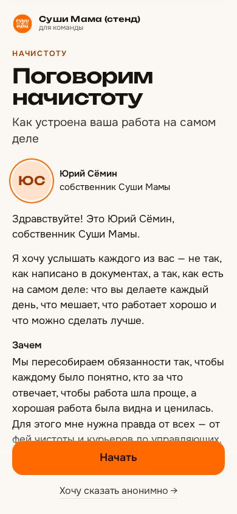
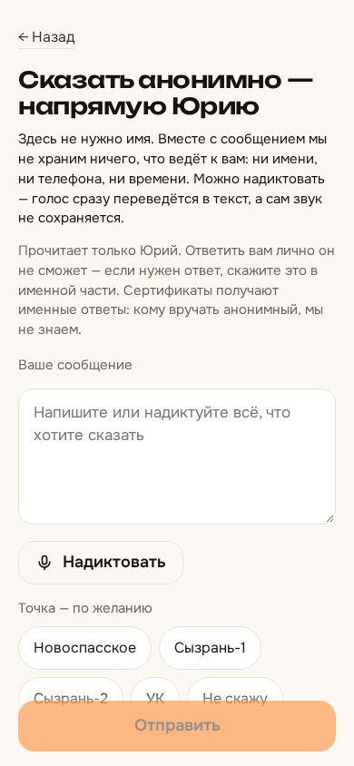

«Начистоту» — что получилось
Состояние на 05.10.2026, вечер. Всё ниже работает на стенде, люди и голоса в нём выдуманные (синтетическая речь). На прод ещё не выкатывалось: туда — еженедельным переносом, который вливаете вы.
Чтобы запустить, нужны вы — список в конце страницы: ответы на пять вопросов (прототип, тексты и плакат, дата ухода Анны, проба из ВК на телефонах, личное обращение), влить перенос и запустить одну команду установки.
Попробовать самому — живые ссылки
Лучше с телефона. Это стенд: тестовый опрос «Начистоту · стенд», в списке выдуманные люди. Можно нажать «Меня нет в списке» и пройти опрос голосом или текстом. Ваша запись уйдёт в тестовую базу стенда, после показа я её удалю.
nachistotu.staging.the-essence.ai/7hubfh6m5kg89d Анонимный канал — без имени, текстом или голосом (голос сразу превращается в текст и нигде не хранится)
…/anonymous Табло «Кто ответил» — для Риммы и управляющих: фамилии, статус, минуты, знаки, без единого слова из ответов
…/tablo/mu88cfyxfy7yfl · обновляется само раз в минуту
Кабинет с ответами на стенде открывается только тестовым входом, поэтому он показан снимками ниже. На проде вы войдёте в него обычным входом в «Суть»: модуль «Команда» → «Опросы».
1. Страница сотрудника
Человек находит себя по фамилии и один раз нажимает «Записать». Дальше на экране по одному вопросу: «Далее» ставит метку, а запись идёт непрерывно. Можно отвечать текстом или загрузить готовое голосовое. Части записи сохраняются на телефоне, пока сервер их не подтвердит, поэтому пропавшая сеть или закрытая вкладка ничего не теряют.


Все экраны по шагам («Кто вы?», «Это вы?», план вопросов, вопрос, «Сохранено», «Спасибо»), светлая и тёмная тема, ширины 320–430 px: снимки экранов. Интерактивный прототип: proto. Тексты людям v3 и плакат с QR на утверждение: texts. Как проверить на живом телефоне: live-test.
2. Табло «Кто ответил» — для Риммы и управляющих
Открывается по своей ссылке без входа. Показывает только точку, фамилию, должность, статус («не начато / мало / ответ есть / подробно»), минуты голоса, число знаков и время последнего ответа. Слов из ответов на табло нет — проверено поиском: 15 слов из ответов тестового опроса на табло не нашлось ни одного. Анонимные сообщения на табло не видны и в числа не входят.


3. Ваш кабинет — ответы видите только вы
Это модуль «Команда» внутри «Сути». Ответы открываются только тем, кого вы впишете в читатели опроса; для «Суши Мамы» это вы один. Римма, Анна, Катерина, Павел как админы пространства и админ платформы получают «страница не найдена» — тот же ответ, что на несуществующий опрос. Каждое открытие, поиск и выгрузка пишутся в журнал доступа.


4. Что проверено и чем
| Что | Как проверено |
|---|---|
| Запись не теряется | Сеть пропала на минуту: 60 частей накопились на телефоне и дослались, 78 из 78 с без дыр. Запись на 20 минут целиком, у каждого из 16 вопросов свой отрезок. Закрытая вкладка и уход в фон обработаны. Брошенную запись сервер закрывает сам. |
| Расшифровка | Только GigaAM, своя служба на сервере, whisper не используется. Выкат посреди расшифровки не отбрасывает её к началу. Скорость на стенде (1,5 ядра): 99,5 с речи за 18,7 с. |
| Нагрузка | 20 человек одновременно, с одного адреса, как на общем Wi-Fi точки: принято 2400 частей из 2400, отказов 0. Все 20 записей расшифрованы за 10 минут. |
| Доступ | Админы пространства, админ модуля и админ платформы не из читателей получают 404 на каждом разделе. Гость без входа уходит на вход. Ключ одного человека не открывает чужую запись. |
| Анонимность | В базе у анонимного сообщения только текст, точка, тема и дата — ни сеанса, ни адреса, ни браузера, ни точного времени. Звук диктовки нигде не хранится. Журналы и сборщик ошибок без текста и адреса. |
| Резервная копия | Звук опроса входит в ночную копию. Восстановление на стенде из копии во временные контейнеры: звук 46 из 46, части 3993 из 3993, тексты 315 ответов совпали с живым стендом. |
| Если что-то сломается во время сбора | Аварийный режим включается одной командой без выката. Люди видят «на минутку на обслуживании, запись цела», записи копятся на телефонах и досылаются сами. Тревоги приходят в Telegram: ошибки записей, зависшая очередь, служба распознавания недоступна, всплеск сбоев у людей. |
| Просьба удалить ответы | Одна команда удаляет всё, что прислал человек: ответы, звук, части записи на диске. Проверено на стенде. |
| Скорость и удобство | Lighthouse на телефоне ≥ 95, первый экран ≤ 150 КБ. Кнопки не меньше 48 px, контраст AA в обеих темах, анимация плавная. |
5. Что нужно от вас
- Пять ответов в очереди решений (открыть очередь):
- прототип страницы сотрудника — SM-NACH-133 ждёт
- тексты людям v3 и плакат с QR — SM-NACH-135 ждёт
- личное обращение: фото, видео, вопросы вашим голосом — SM-NACH-134 ждёт
- дата ухода Анны — в карточке этапа 1 SM-NACH-119 ждёт
- проба из сообщения ВК на iPhone и Android (5 минут с телефона, инструкция — live-test) — SM-NACH-124 ждёт
- Влить еженедельный перенос develop → main. Код «Начистоту» и всех проверок к нему готов; перед срезом мы с w2 прогнали стражи полного CI и поправили свои.
- Одна команда с мака после выката, около 15 минут. Она поднимет распознавание, включит модуль только «Суши маме», загрузит опрос и 61 человека, сделает вас читателем, заведёт адрес и внешнюю проверку: SM-NACH-138.
Дальше без вас: проверочный проход на проде, пилот на 4–6 людях с цифрами, правки, затем сообщение Римме — его текст тоже на ваше «да».